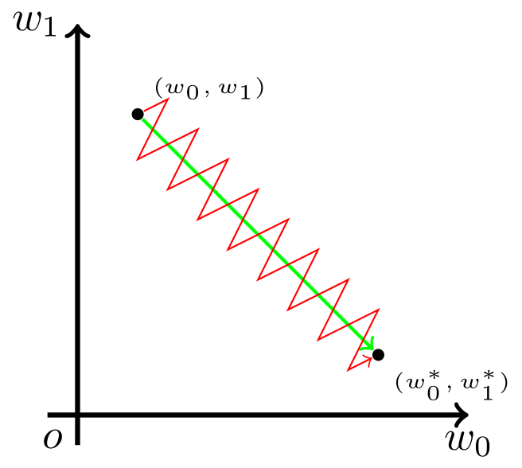

ARCHIVE / SEPTEMBER 2026
激活函数汇总
形状、输出范围，以及 PyTorch 里对应的层。
Sigmoid
Sigmoid 把任意实数映到 (0, 1)。输出落在这个区间，所以它常放在二分类的输出层，把数值读成属于正类的概率。
函数平滑、可导。输入很大或很小时梯度接近 0，深层网络反向传播时参数几乎不再更新。指数运算也比后面的阈值函数贵。
输出又全是正数，不是零中心的。下一层若只看到正的输入，这一层每个权重的梯度就同号：一步里只能一起增大，或一起减小。最优点若要求其中一个变大、另一个变小，就只能先集体走偏，再集体拉回。参数空间里的轨迹因此是折线，而不是直达。[1]

import torch.nn as nn
sigmoid = nn.Sigmoid()Softmax
Softmax 用在多分类的输出层，是 Sigmoid 对多个类别的推广。对含 𝐾 个元素的向量 𝑧，第 𝑖 个元素变为下面的值。每个输出都在 (0, 1)，并且总和为 1，因此可以把 logits 读成概率。
训练时通常直接用 nn.CrossEntropyLoss()。它已经包含对数 Softmax，最后一层不必再加一层 Softmax。
import torch.nn as nn
# dim=1 表示在类别维度上计算
softmax = nn.Softmax(dim=1)Tanh
Tanh 也是 S 型曲线，但关于原点对称，输出在 (−1, 1)。它没有 Sigmoid 那种输出全为正的问题，隐藏层里通常比 Sigmoid 收敛快。输入很大或很小时，梯度仍然趋近于 0。
import torch.nn as nn
tanh = nn.Tanh()ReLU
ReLU 是现在隐藏层里最常用的激活。正输入原样通过，负输入变成 0，输出在 [0, +∞)。𝑥 > 0 时梯度恒为 1，正区间没有梯度消失，计算也只是一次比较。一部分输出为 0，表示会变稀疏。
负输入的梯度是 0。若一次较大的负向更新之后，这个神经元对后续样本始终输出负数，它就不再被更新。
import torch.nn as nn
relu = nn.ReLU()Leaky ReLU
Leaky ReLU 在负半轴保留一个小斜率 𝛼，避免 ReLU 那种梯度为 0 的死区。输出可以到负无穷。默认 𝛼 = 0.01。很多时候 ReLU 已经够用，这个改动不一定带来明显差别。
import torch.nn as nn
# negative_slope 对应公式中的 alpha，默认为 0.01
leaky_relu = nn.LeakyReLU(negative_slope=0.01)PReLU
PReLU 把负半轴斜率 𝑎 做成可学习参数，训练中自己调整，不必事先指定。
import torch.nn as nn
prelu = nn.PReLU()ELU
ELU 在负半轴用指数饱和，而不是一条直线。负值一侧平滑地趋向 −1，输出均值更接近 0。相对 ReLU，它往往收敛更快；代价是负区间要算指数。
import torch.nn as nn
elu = nn.ELU()SELU
在 LeCun 初始化等条件下，SELU 能让每一层激活的均值保持在 0、方差保持在 1，因此适合很深的全连接网络。负半轴饱和在约 −1.76。
import torch.nn as nn
selu = nn.SELU()Softplus
Softplus 是 ReLU 的光滑版本，整个定义域都可导。计算比 ReLU 贵。需要高阶导数连续时，例如一些物理模型或生成模型，会用它代替 ReLU。
import torch.nn as nn
softplus = nn.Softplus()GELU
GELU 按输入的大小，以高斯累积概率决定保留多少：𝑥 越大，保留得越多。BERT、GPT 和 ViT 的默认激活是它。
import torch.nn as nn
gelu = nn.GELU()Swish / SiLU
SiLU 是输入乘上自己的 Sigmoid。上方无界，下方有界，平滑，而且不是单调的。Google 提出后，EfficientNet 和 YOLO 系列用它做隐藏层激活。
import torch.nn as nn
silu = nn.SiLU()Mish
Mish 比 Swish 更平滑。一些视觉基准上略好于 ReLU 和 Swish，计算也更贵。
import torch.nn as nn
mish = nn.Mish()Hard Swish
Hard Swish 用 ReLU6 近似 Swish，是 MobileNetV3 里用来换推理速度的版本。
import torch.nn as nn
hardswish = nn.Hardswish()参考资料
[1]. 谈谈激活函数以零为中心的问题